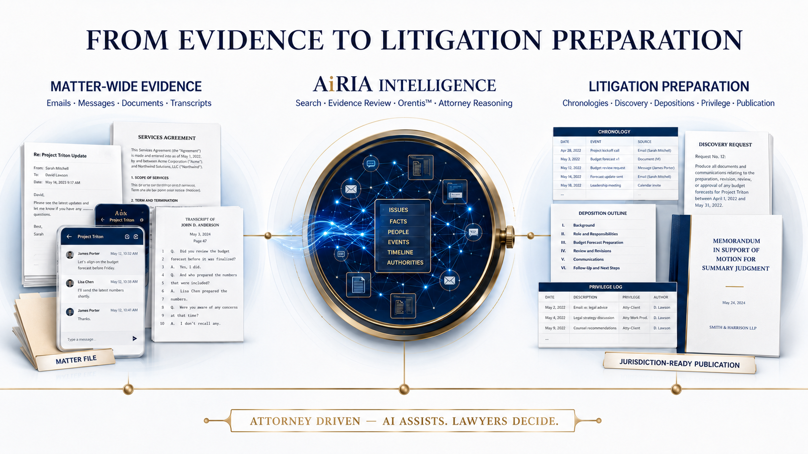
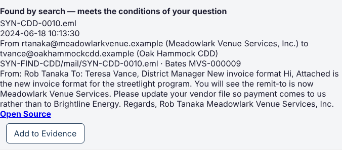

Find what matters
Search communications, attachments, documents and scanned PDFs in ordinary language, then inspect the passage and original source.
 Consult with an AiRIA Expert
Consult with an AiRIA ExpertAttorney Driven Litigation Intelligence
AiRIA connects the full litigation journey—from the first document to a case ready for attorney review. Find the evidence, build the proof, test conflicting accounts, prepare discovery and depositions, and develop pleadings and reports in one connected workspace. AiRIAdocs keeps the firm’s documents and records organized alongside the case.
One evidentiary record
Critical evidence is scattered across inboxes, text threads, transcripts, spreadsheets, and document folders. Traditional tools help store or search pieces of that record, but litigation teams still have to connect the evidence to the work.
AiRIA closes that gap—preserving the source record while moving from raw evidence to practical, reviewable litigation output.

Attorney Driven
AiRIA provides structured litigation workflows that keep attorneys in control. Attorneys can accept, edit, narrow, expand, reject, or request revision of the work.
AI is the enabling technology. Attorney judgment governs.Search communications, attachments, documents and scanned PDFs in ordinary language, then inspect the passage and original source.
Connect facts and supporting or adverse evidence to claims, defenses and their elements. Use proof gaps and conflicting accounts to direct the next inquiry.
Prepare discovery packages, deposition materials, pleadings and research reports. Edit within AiRIA and export the appropriate work product to Word or PDF.
The source stays with the work
Open the underlying document from the finding, evidence link or work product you are reviewing. Source passages and Bates references keep the trail clear, so the lawyer can inspect context without searching through folders again.

From record to result
AiRIA helps the team carry context forward, so each stage builds on verified work already completed.
Collect the matter’s emails, messages, documents, and transcripts.
Search the complete record and surface the evidence that matters.
Review source-linked results and build a defensible factual record.
Produce practical litigation work without rebuilding the evidence trail.
Built for defensibility
AiRIA is designed around the underlying record. Results remain connected to source material so lawyers can review, test, refine, and use the work with professional judgment.
Designed around the matter
See AiRIA with your workflow in mind
See one matter from evidence to work product. Ask for a demonstration of Find, Build My Case, Discovery, Depositions, Pleadings and AiRIAdocs. Follow a source through the workflow and see how the team’s work stays connected.
Consult with an AiRIA Expert